Git
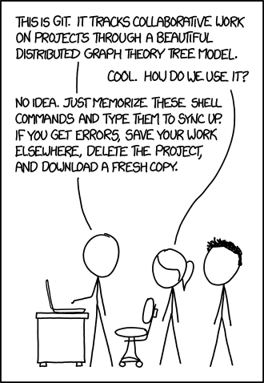
Git è un software per il controllo versione dei progetti scaricabile da qui: https://git-scm.com/downloads
(Scaricatelo e installatelo se non fosse presente sul vostro pc)
Credo che tutti abbiate già usato una qualche forma di gestione file ad esempio:
- html_exercise_old.html
- html_exercise_new.html
Oppure su google drive il menù “cronologia delle revisioni”
L’idea di Git è quella di sistematizzare queste operazioni e permettere di lavorare a più persone sullo stesso progetto.
Esrcizio 0
Esempio classico di funzionamento di Git per il versioning in locale
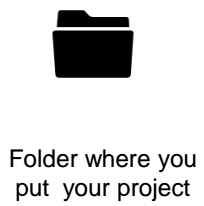 | - Create una cartella GitTest sul desktop
- Tasto destro - e scegliete git bash here (oppure usate il prompt dei comandi di windows e raggiungete la directory GitTest)
|
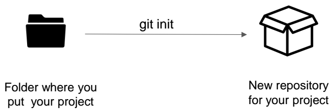 | - Nel terminale ora potete scrivere i comandi di Git
- Il primo comando (git init)crea un nuovo repository
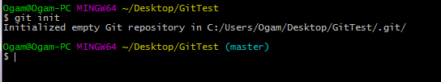 |

| - Nella working copy lavorerete come al solito
- Il repository terrà traccia delle modifiche
|
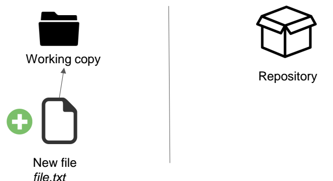 | - Aggiungete un file di testo (es: prova.txt) alla cartella GitTest
|

| - Il comando git add [nome file] aggiunge la cartella alla “staging area”
- provate dunque il comando git add prova.txt
|
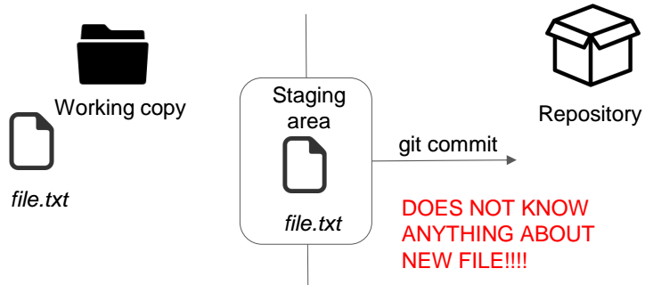 |
|
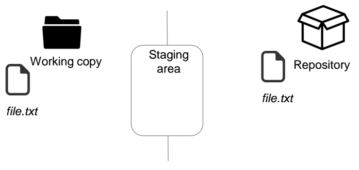 | - Dopo aver impostato email e nome riprovate il comando
- git commit -m “il mio primo commit”
- Ora ci sono due copie del file una sulla working copy e una sul repository
|
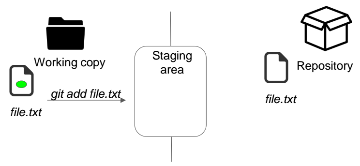 | - Modificate il file (scrivete dentro “ciao mondo”)
- Salvate il file
- Aggiornate la staging area (git add)
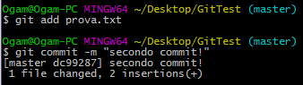 |
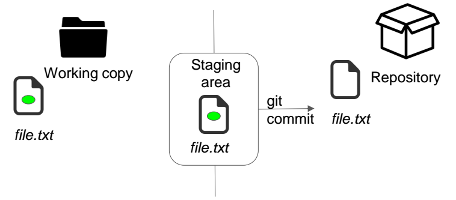 | - Fate il commit delle modifiche
- git commit -m “il mio secondo commit”
|
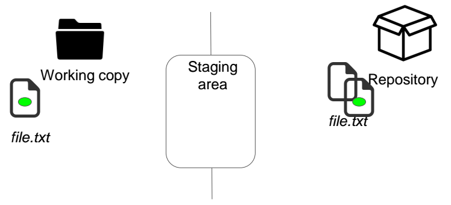 | - Ora ci sono tre copie del file
- Il file vuoto
- Il file con scritto ciao mondo
|
Ricapitolando:
- Ogni volta che finite di lavorare a un progetto o a un file lanciate i seguenti comandi
- git add nomeFile (o git add * per aggiungere tutti i file modificati)
- git commit -m “descrizione delle modifiche”
Puoi saltare il passaggio git add aggiungendo ad ogni commit il comando -a (funziona solo per i file che sono già stati aggiunti a git, quindi devi lanciare almeno una volta il comando add per ogni nuovo file)
$ git commit -a -m 'added new benchmarks'
Altri comandi
- git log (visualizza lo storico dei commit)
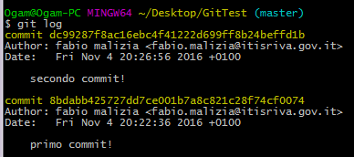
- git checkout codice_commit
Il comando checkout vi permette di spostarvi da una versione all’altra
es:
Per tornare alla mia prima versione del file:
Per andare alla seconda versione del file
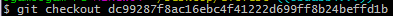
In ogni caso, per tornare all’ultimo commit (head version)
Tutto questo è solo un 1% di quello che possiamo fare con git in locale, ma per i nostri scopi interessa di più lavorare con un repository remoto.
DOMANDE A CUI RISPONDERE
Riferimenti utili: 1.1 Cosa è Git
- Cos’è Git?
- Come si inizializza una cartella locale in modo che il contenuto possa essere gestito da GIT?
- Come si aggiunge un file alla Staging Area?
- Come si crea una nuova versione dei file nella Staging Area (commit)?
- Come si imposta l’identità di un utente (user name ed email)?
- Come si può fare un commit di tutti i file che ci interessa versionare ma evitare il comando git add per i file che sono già stati aggiunti alla staging area?
- Come si visualizza l’elenco dei commit?
- Come si passa da una versione all’altra del software gestito da git?
# | Stato | Risposta |
1 | Non iniziato |
|
2 | Non iniziato |
|
3 | Non iniziato |
|
4 | Non iniziato |
|
5 | Non iniziato |
|
6 | Non iniziato |
|
7 | Non iniziato |
|
8 | Non iniziato |
|
* La prima volta che fate il commit, git vi segnalate che dovete indicare un nome che identifica l’autore del commit. Ci sono due parametri da indicare col comando git config: email e nome
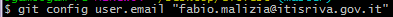